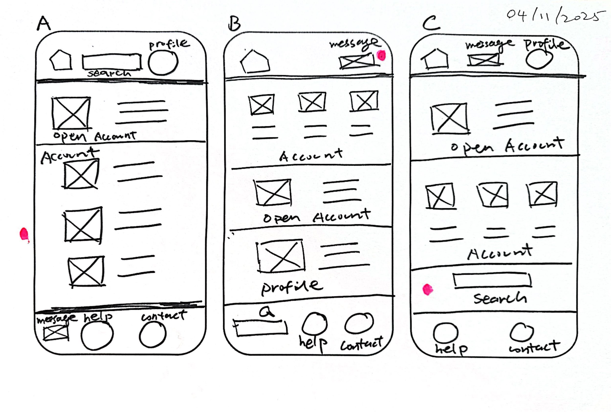
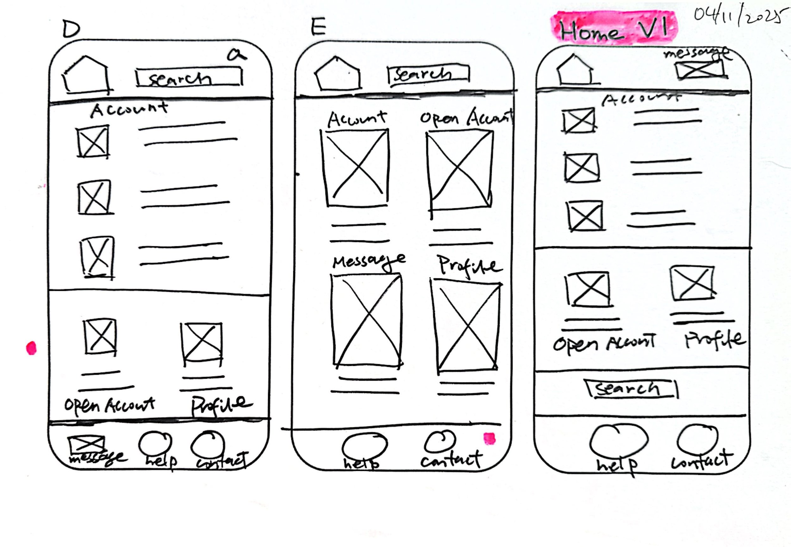

Paper Wireframes
Today I reviewed FigJam tips, some of which I had already learned yesterday while creating the user flow. I created a Paper Wireframe Template using Word. I found that an A4-sized sheet of paper could accommodate three mobile phone screens.
Tonight, I started my first paper wireframe: the homepage for my first project. I followed the Coursera Google Course by drawing five quick sketches, and then I combined the best parts to create my very first 'Home V1.'
A sentence I read today stated: ‘IA is a blueprint of the design structure which can be generated into wireframes and sitemaps of the project. UX designers use them as the basic materials so that they could plan navigation system.’

